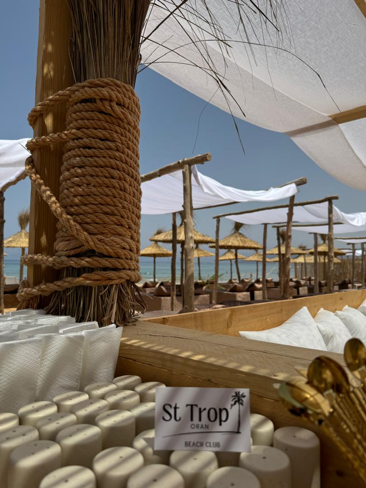
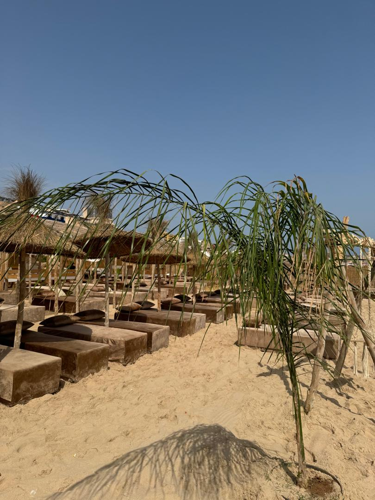
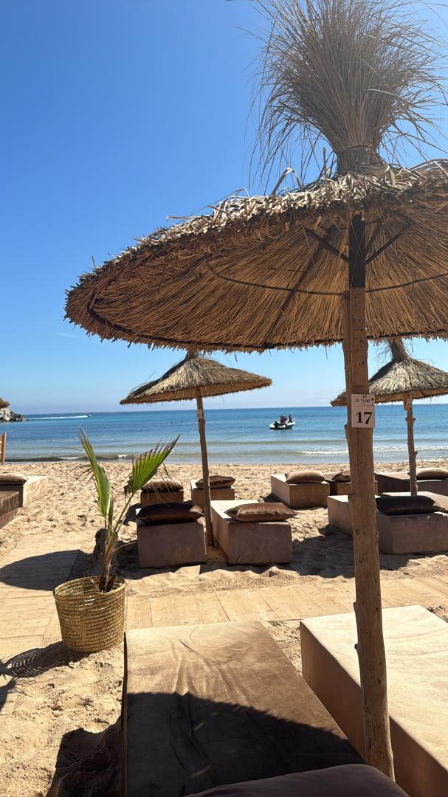

Bienvenue Au St Trop' Oran
profitez d'une expérience exceptionnelle face à la Méditerranée.
A Propos De Nous
Bienvenue au St Trop Oran, un havre de détente et de fête niché sur la côte d'Ain El Turc, où l'esprit chic de la Méditerranée rencontre l'âme vibrante de l'Algérie.
Ce beach club nouvelle génération vous accueille tout l'été pour une expérience balnéaire unique, entre ambiance bohème, confort absolu et cuisine raffinée. Imaginé comme un lieu de vie à ciel ouvert, le St Trop Oran est bien plus qu'une plage : c'est une destination. Ici, le sable doré et la mer turquoise deviennent le décor de vos plus beaux souvenirs. Dès votre arrivée, vous êtes enveloppé dans une atmosphère chaleureuse et stylée, où chaque détail a été pensé pour votre bien-être. Transats , lits balinais, piscine sur le sable , cocktails signatures, musique envoûtante, tout invite à la déconnexion et au plaisir des sens. Toute la journée, profitez d'un service soigné grâce à notre équipe qui saura satisfaire vos attente . Marahba
Découvrez une programmation éclectique, des talents locaux émergents aux stars internationales, dans une ambiance qui fusionne l'énergie des beach clubs avec l'authenticité méditerranéenne.

Notre Bar
Le bar du St Trop Oran est l'un des cœurs battants du beach club, un espace vivant et raffine où se retrouvent les amateurs de cocktailset de douceurs estivales.
Notre carte de boissons, soigneusement élaborée, mêle classiques incontournables, créations maison et références locales. Mojitos à la menthe d'Oran,cocktails fruités revisités, ... chaque verre est préparé à la minute par nos bartenders passionnés, dans un esprit de fraîcheur et de créativité. Du matin jusqu'au coucher du soleil, notre bar vous accompagne à tous les moments de la journée. Jus détox au réveil, citronnade maison à la sortie de l'eau, sodas bien frais à l'heure du déjeuner, et bien sûr, cocktails festifs pour animer vos fins d'après-midi en musique. Nos serveurs sont attentifs à vos envies, et toujours disponibles pour vous conseiller ou personnaliser vos boissons selon vos goûts. C'est ici que l’l'on se retrouve, que l'on célèbre l'été. Une ambiance à la fois détendue et élégante, typique du St Trop Oran


Où nous trouver
Plage Beau Séjour, Oran
Notre établissement se situe sur l'une des plus belles plages d'Oran, à seulement 15 minutes du centre-ville.
Adresse : Route de la Corniche, Oran 31000
Horaires : Tous les jours de 10:30 à 20:00
Téléphone : +213 554 97 90 86